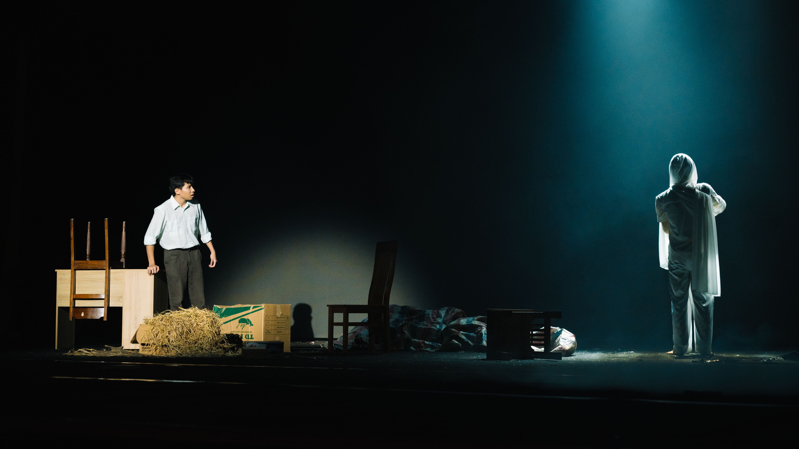
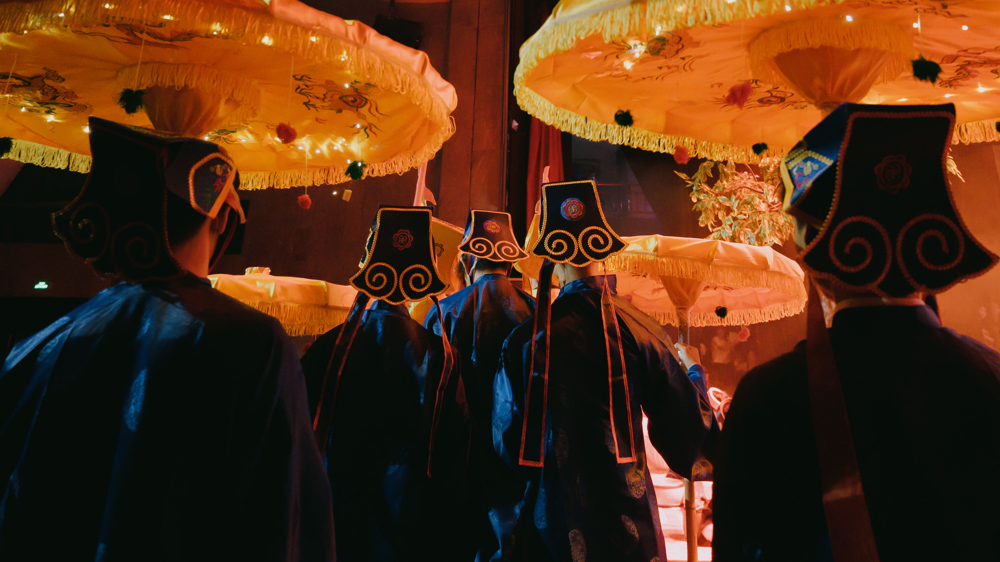

ON STAGE 2025: RẠCH CẠN
Giữa miền đồng hoang cỏ úa, con rạch khô nằm lại như một vết sẹo già trên da thịt của đất. Dòng nước rút đi để lại sự trơ tráy cạn cùng, đọng lại chỉ còn thứ bùn rêu tơ tướp mang hơi thở của cái ác - thứ bóp nghẹt sự sống của những khát khao tốt lành.
Dẫu vậy, dưới đáy sâu vang vọng những ẩn ức chưa được hóa giải, từng hạt mầm khát khao vẫn khẽ lay mình, lặng lẽ ghép lại những mảnh vỡ của ký ức.
Khát vọng trong trẻo ấy thôi thúc hành trình truy tìm tận cùng ngõ thẳm của sự thật, nơi những tiếng nói bị chôn vùi dưới lớp bùn sâu nay được lắng nghe, chạm tới mạch nguồn bị lãng quên. Và dường như đất cũng đáp lại, trong lòng tăm tối ấy, sự sống lại khẽ chuyển mình.
Từ lòng đất, một âm thanh vọng lại, như tiếng nước trở mình sau giấc ngủ dài.
Bối cảnh
Lấy bối cảnh tại miền Đông Nam Bộ những năm 80, vở kịch là bức họa về một làng quê nơi ẩn hiện những hủ tục núp bóng dưới lớp vỏ của thần linh. Ở nơi con người dựa vào đức tin để tồn tại, hành trình của họ trở thành tấm gương phản chiếu muôn hình vạn trạng của niềm tin: có người tin để sống, có kẻ tin để quên, và cũng có những người vì niềm tin mà đánh mất chính mình.
Liệu niềm tin có phải ánh sáng dẫn lối, hay chỉ là ngọn đuốc khiến con người tự thiêu giữa đêm đen mê muội?

Sơ lược về nội dung
Câu chuyện theo chân nhân vật chính là Trọng, 28 tuổi, quê Thanh Hóa, từng làm điều dưỡng sinh ở trại tập trung thời chiến tranh. Lần theo những mẩu kí ức lờ mờ của mình về ngôi làng ngày xưa gia đình mình từng sinh sống, anh quay lại đó với mục đích tìm lại người mẹ và em gái đã mất tích từ 18 năm trước của mình

Tại đây, anh gặp được Hoa, cô gái được toàn thể dân làng kính trọng và đặt cho biệt danh "người truyền tin của thần" vì ban phát cho cả làng thứ nước thánh chữa được căn bệnh tâm linh mà mọi người mắc phải. Tuy nhiên, khi càng điều tra sâu hơn về tất cả mọi thứ, từng mảng sự thật trần trụi bắt đầu dần được hé mở, tiết lộ những điều cấm kị mà dường như không ai được phép có quyền biết đến.


Credit
Tổng đạo diễn: Nguyễn Linh Đan
Trưởng ban tổ chức: Nguyễn Diệu Linh
Chỉ đạo sản xuất: Đặng Văn Nam, Nguyễn Minh Ngọc
Phó ban tổ chức & Chỉ đạo hình ảnh: Đỗ Huyền Dạ Thảo
Giám đốc sân khấu: Nguyễn Minh Ngọc
Giám đốc nghệ thuật: Phạm Ngọc Bảo Linh
Giám đốc biên kịch: Nguyễn Việt Đức Trí
Giám đốc hậu trường: Nguyễn Lương Tuệ Nhi
Giám đốc sáng tạo: Nguyễn Lê Thuỷ Tiên
Giám đốc truyền thông: Phạm Mai Hương, Nguyễn Bá Hoàng Thái
Giám đốc tài chính: Trần Trọng Đạt
Giám đốc hình ảnh: Nguyễn Hương Giang, Phạm Minh Khôi, Nguyễn Huyền Linh
Special thanks to:
2007 Studio
Anh Bùi Nhật Minh
Chị Trần Nhi
Glee Phan Đình Phùng
Ams Crew
Cầm Ca
Chị Nguyễn Ngọc Bảo Ngân
Credit: 2007 Studio - Chụp Ảnh Kỷ Yếu
Nhân vật Trọng

- Nam, 28 tuổi, từng là điều dưỡng, là anh trai ruột của Quỳnh, là con của 2 vợ chồng trước đây từng làm giáo viên ở cô nhi viện 18 năm trước (bố cậu tên là Thanh, mẹ cậu tên là Mai)
- Ngày xưa, trong 1 đêm ở cô nhi viện, anh đã bị bố đưa đi trốn ngay trong đêm mà không rõ lý do, không rõ rằng Quỳnh và mẹ mình đang ở đâu.
- Suốt 18 năm sống cùng bố, anh liên tục có những giấc mơ rất kì lạ về việc anh thấy có những người không rõ mặt mũi bắt đi những đứa trẻ, và ác mộng về việc Quỳnh liên tục gọi anh quay lại. Khi hỏi bố những chuyện như thế thì bố chỉ lặng đi, bảo rằng bố và mẹ đã ly hôn khi ở cô nhi viện, và không trả lời thêm gì anh. Đến 1 hôm thì anh đã thấy bố mình tự vẫn ở trong phòng làm việc.
- Do có quá khứ như thế nên Trọng có xu hướng ít nói, thu mình lại với mọi người xung quanh, để ý tiểu tiết để góp phần tìm ra sự thật mà anh theo đuổi.
- Lúc đầu khi đến cô nhi viện anh chỉ chú tâm vào công việc và mục đích cá nhân của mình là tìm em gái Quỳnh.
- Sau khi tiếp xúc với Hoa và cô nhi viện, anh đã dần trở nên yêu mến nơi này hơn và dần đã mở rộng lòng mình ra hơn, bắt đầu đi tìm hiểu nhiều hơn về những thứ ở trong ngôi làng này.
- Trang phục: Màu xanh dương nhạt, đậm dần về cuối vở kịch
Nhân vật Hoa

- Nữ, khoảng 27 tuổi, là em gái ruột của Trọng, thông minh dịu dàng, rất thương yêu những đứa trẻ ở cô nhi viện.
- Trong quá khứ, cô cùng những đứa trẻ khác bị hội ông Châu liệt bắt đi ngay trong đêm nhưng đã được mẹ cô giải cứu và trốn thoát được. Nhưng mẹ cô đã bị hội ông Châu thủ tiêu.
- Khi quay lại được trước cửa cô nhi viện, cô được cô Diễm nhận vào cô nhi viện mà không ai hay biết về danh tính thực sự của cô.
- Chứng kiến tất cả những việc như thế, những đứa trẻ bị bắt đi không trở lại, và cả việc cô nghĩ Trọng và bố bỏ mình đi, cô đã quyết định ở lại cô nhi viện, đổi tên, lấy cho mình thân phận mới là một đứa trẻ mồ côi ở cô nhi viện.
- Sau này, cô tiếp quản cô nhi viện, tạo nên buổi lễ giải hạn định kì để cho những đứa trẻ ở cô nhi viện uống “nước thánh” để giải độc cho những nguồn nước bẩn ở nhà máy ông Châu.
- Tin rằng giữ cho nghi lễ giải hạn tồn tại là cách duy nhất để bảo vệ bọn trẻ khỏi sự tàn nhẫn và mê tín của làng. Thậm chí âm mưu đầu độc ông Châu, hãm hại Túc, đốt cháy nhà kho để sự thật không bị bại lộ.
- Trang phục: Màu đỏ
Nhân vật Túc

- Nam, khoảng 20 tuổi, từng là trẻ mồ côi lớn lên trong cô nhi viện.
- Cậu có tính tò mò, ngây thơ, bốc đồng, thích tìm tòi tìm hiểu sự thật đằng sau tất cả mọi thứ.
- Là 1 trong những người hiếm hoi không tin vào thần linh và tâm linh ở trong làng và tin rằng sự thật và khoa học luôn là thứ tốt đẹp và có lợi dành cho ngôi làng.
- Đại diện cho người trẻ thanh niên đầy năng lượng, luôn muốn tìm tòi, học hỏi.
- Sau sự kiện chính, cậu trở nên chín chắn hơn và góp phần phát triển tiếp cô nhi viện của làng.
- Trang phục: màu nâu cam
Cô nhi viện

Cô nhi viện đại diện cho những giá trị tốt đẹp dẫu có trong 1 xã hội đẩy mục rũa. Không có thông tin cụ thể về việc ai là người đứng ra cải tạo nơi đây thành cô nhi viện, và tại sao lại làm như thế. Chỉ biết được rằng đó chắc chắn là 1 người tốt và vì lí do tốt!
Nhà kho
Nhà kho cũ nằm ở sân sau của cô nhi viện. Lũ trẻ thường hay bảo nơi đây kì dị, ghê rợn. Nhiều người lớn cũng không tin đâu, nhưng mà đi vào rồi mới biết: Phải có lí do thì mới có cái cảm giác ghê ghê rợn rợn như vậy...
Nước thánh
Mát mát, ngọt ngọt. Đó là thứ nước thiêng liêng mà mỗi khi nghi lễ giải hạn được thực hiện, ai cũng thèm khát có được nó. Chậm trễ 1 chút có thể phải trả giá bằng cả tính mạng, vì "nước thánh" là có giới hạn.